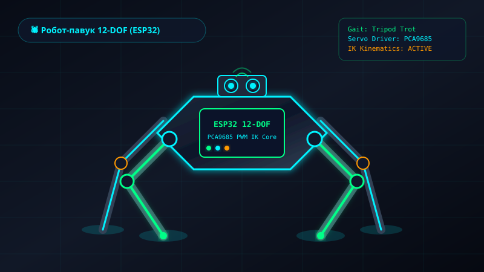

Персональна відкрита апаратна лабораторія Tejnikuwus (учня 10 класу ліцею №141 «ОРТ» м. Києва). Розробка шагаючих робототехнічних комплексів, інверсна кінематика, проектування плат і датчиків, програмування мікроконтролерів (ESP32, STM32, Arduino) та оптимізованого низькорівневого C++ / Python firmware.
Hardware Builds
Robotics Kinematics
Open-Source Firmware
Повний цикл проектування: від 3D-моделювання кінцівок та розрахунку інверсної кінематики до багатоканального PWM-керування.

Шагаючий робот-павук з 12 ступенями свободи на базі Raspberry Pi Compute Module 5 та драйверів PCA9685. Використовує кастомний рушій інверсної кінематики (Inverse Kinematics), алгоритми ходи Tripod & Wave Gait, дистанційне керування по Wi-Fi/Bluetooth та ультразвуковий сонар з IMU гіроскопом для обходу перешкод.
Апаратні пристрої, вбудовані системи та цифрові інструменти (Built from schematic to firmware).
Емулятор апаратної плати мікроконтролера в браузері: керуйте цифровими GPIO, симулюйте аналоговий вхід ADC та моніторте реальний потік пакетів через UART Serial Monitor (115200 baud).
Клієнтський диктофон з вибором мікрофонів, інтерактивним осцилографом (Web Audio API AnalyserNode 60 FPS) у реальному часі та прямою конвертацією у формати MP3, WAV (16-bit PCM), WebM та OGG прямо в пам'яті браузера.
Інтерактивне дослідження поліноміальної регресії: вибір ступеня моделі k, генерація аналітичних формул, порівняння Train/Test MSE та аналіз явища перенавчання (Overfitting) у середовищі Streamlit stlite.
Апаратні платформи, мови програмування firmware, середовища EDA/CAD та протоколи телеметрії.
Хроніка навчального процесу та інженерного розвитку в Ліцеї №141 «ОРТ» м. Києва.
Учень 10 класу з поглибленим вивченням STEM, фізики та технологій
Створення діючих зразків робототехніки, шагаючих роботів (Hexapod) та лабораторних систем автоматизації на мікроконтролерах.
Учасник та призер шкільних і міських науково-технічних заходів
Розробка діючих макетів автоматизації, захист проектів бездротової телеметрії (ESP-NOW) та автофіксації параметрів навколишнього середовища.
Створення електронних вузлів та мехатроніки з нуля за принципами відкритості та інженерної оптимізації.
// EMBEDDED SYSTEMS & MECHATRONICS DEVELOPER
Я учень 10 класу ліцею №141 «ОРТ» м. Києва. Моя пристрасть — це проектування апаратних систем, конструювання робототехнічних комплексів та створення оптимізованого firmware для мікроконтролерів (Built from schematic to firmware).
Ліцей №141 «ОРТ» м. Києва (10 клас)
Вбудовані мікроконтролерні системи (C++, MicroPython) та інженерна мехатроніка
Київ, Україна
Розробка систем на базі ESP32, STM32 (ARM Cortex), Arduino. Робота з шинами I2C, SPI, UART, PWM та протоколами телеметрії.
Проектування корпусів та рухомих механізмів у SolidWorks, робота з 12-DOF сервоприводами, інверсною кінематикою (IK) та датчиками орієнтації IMU.
Створення бездротових сенсорних нод, швидкісний обмін через ESP-NOW (струм споживання < 15мкА у сні), MQTT телеметрія та хаб на базі Raspberry Pi.
Маєте ідею проекту чи хочете обговорити розробку апаратних пристроїв та мехатроніки?
м. Київ, Україна (Ліцей №141 «ОРТ»)
burima.artem.ua@gmail.com